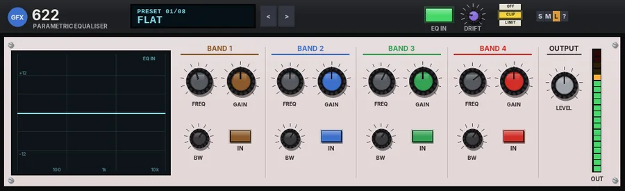

622
A four-band broadcast parametric equaliser with wide, overlapping band ranges.

Overview
622 is a four-band fully parametric equaliser in the spirit of the classic broadcast rack EQs. Each band has its own frequency, bandwidth and gain, and the ranges overlap widely, so any band can reach almost anywhere: band 1 covers 20 - 800 Hz, band 2 80 Hz - 3 kHz, band 3 300 Hz - 10 kHz and band 4 1 - 20 kHz.
Bandwidth is set in octaves, from a deep, narrow notch (0.1 octave) to a broad tilt (4 octaves), with up to 16 dB of boost or cut per band. A response window on the left draws each band in its own colour with the total curve over the top.
Behind the EQ sits a model of the unit's op-amp headroom: it is transparent until a very hot signal nears the rail, and then softens it a little. The DRIFT dial lets the supply voltage wander, as on real hardware.
Reach for it for
- Broad tone shaping of vocals, instruments and buses
- Notching out hum and single resonances with a narrow bandwidth
- Gentle mastering curves (wide bandwidths, small gains)
- Telephone and radio-voice effects
- Shaping kick and bass with overlapping low bands
Controls
The header
- Preset display
- Shows the preset number and name. Click it for the full preset list. While you move a control, it shows that control's name and value for a moment.
- < / >
- Step to the previous or next preset (wrapping round).
- EQ IN
- Switches the whole equaliser in or out. The output level and the output stage stay in either way.
- DRIFT
- How much the virtual supply voltage wanders, 0 to 100% (20% by default). See Drift below.
- OFF / CLIP / LIMIT
- The final stage: nothing, a soft clipper at -0.3 dBFS (no latency), or a lookahead limiter that holds the peaks at -0.3 dBFS (3 ms latency, compensated by REAPER). While the output clips, the CLIP key flashes red.
- S / M / L
- Panel size: small, medium or large. The panel also scales to fit the plugin window.
- ?
- Opens a pop-up with the design credit, the GFX website address and the address of this manual. Click anywhere to close it.
Response window
Shows the EQ curve from 20 Hz to 20 kHz, plus and minus 18 dB. Each band that is in is drawn faintly in its own colour (brown, blue, green, red), with the total curve as the bright line. The window reads EQ OUT and the curve goes flat when EQ IN is off.
BAND 1 to BAND 4
The four bands have the same controls; only the frequency range differs. The bands work in series, band 1 first.
- FREQ
- The centre of the band. BAND 1: 20 - 800 Hz (100 Hz by default). BAND 2: 80 Hz - 3 kHz (500 Hz). BAND 3: 300 Hz - 10 kHz (2.5 kHz). BAND 4: 1 - 20 kHz (8 kHz).
- GAIN (coloured cap)
- Boost or cut, -16 to +16 dB; 0 dB by default.
- BW
- The bandwidth in octaves, 0.1 to 4 (1 by default). Small values make a narrow, deep notch or a sharp peak; large values a broad, gentle tilt.
- IN
- Switches the band in or out.
OUTPUT
- LEVEL
- Output level after the EQ, -12 to +12 dB.
- OUT meter
- A 20-segment output level meter.
Drift
DRIFT lets the supply voltage wander slowly and smoothly, as on a real rack unit. As it moves, the band gains ease by up to 2.5% and the band centres by up to 0.6% (at 100%), and the op-amp headroom rises and falls by up to 2.5 dB, so a hot signal softens a little more when the rail sags. At 0% the EQ stays exactly where you set it.
Knobs: drag up or down (Shift for fine moves); double-click or Ctrl-click to reset a knob to its default.
Presets
Presets set the four bands and the output level, and switch every band in. EQ IN, DRIFT and the output stage are left as they are.
- Flat
- All four bands at 0 dB in their default positions, output 0 dB.
- Vocal Presence
- A little cut at 120 Hz and 350 Hz, +3 dB at 3.2 kHz and +2 dB of air at 10 kHz.
- Kick and Bass
- +4 dB at 60 Hz, -4 dB at 300 Hz and a broad +3 dB at 2.8 kHz for the click.
- Air Lift
- A gentle lift at 5 kHz and +4 dB around 14 kHz, both broad.
- Telephone
- Deep, broad cuts at 200 Hz and 6 kHz with a boost at 1.2 and 2.4 kHz: a narrow phone-line voice.
- Hum Notch 50 Hz
- Very narrow cuts at 50 Hz (-16 dB) and 100 Hz (-12 dB) to remove mains hum.
- Mastering Smile
- Broad, small moves: +2 dB at 50 Hz and 12 kHz, a slight dip in the mids.
- Broadcast Voice
- Low end trimmed at 90 Hz, a touch of warmth at 250 Hz, presence at 2.5 kHz and a little less at 7 kHz.
Tips
- For hum, use BW 0.1 and sweep FREQ slowly with a big cut until the hum disappears, then back the gain off as far as you can.
- Because the ranges overlap, you can stack two bands on the same area - for example two narrow cuts on neighbouring resonances.
- Use EQ IN to compare: the output level stays in circuit, so set LEVEL to match the loudness before judging.
- Set DRIFT to 0 for a static, repeatable EQ; leave a little in for a less clinical, hardware-like feel.
File: gfx-622.jsfx